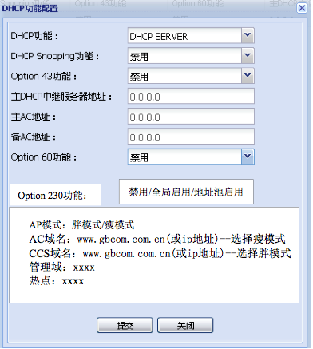
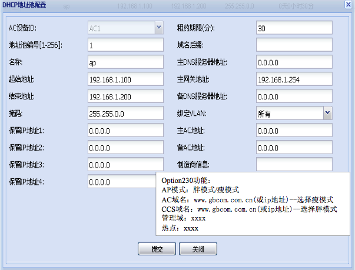

dhcp支持胖瘦自适应
Table of Contents
1 ACWEB 侧修改
option230 为 TEXT 格式，最大长度256：
APMODE=fit/fat,AC_URL=www.gbcom.com.cn,CCS_URL=www.gbcom.com.cn,HOTSPOT=test,DOMAIN=test
1.1 配置页面修改

Figure 1: DHCP全局级配置页面修改

Figure 2: DHCP地址池级配置页面修改
1.2 全局表新增 option 230 字段
typedef struct {
UINT32 ulAcId;
UINT32 ulEnableDhcpServer;
UINT32 ulEnableDhcpSnooping;
UINT32 ulEnableOption43;
UINT32 ulEnableOption60;
+ UINT32 ulEnableOption230; /* 新增, 0:禁用, 1:全局启用, 2:地址池启用 */
UINT8 aucDhcpServerMaster[4];
UINT8 aucDhcpServerSlave[4];
UINT8 aucAcIpMaster[4];
UINT8 aucAcIpSlave[4];
+ CHAR acOption230[256]; /* 新增 */
UINT32 ulMOC;
UINT8 aucMOI[AC_MOI_LEN];
}AC_DB_TBL_ACAPDHCPGLOBALSETUP_T;
1.3 动态地址池配置
typedef struct
{
UINT32 ulId; /* 地址池编号 */
CHAR acIpPoolNAme[32]; /* 名称 */
UINT8 aucBeginIp[4]; /* 起始地址 */
UINT8 aucEndIp[4]; /* 结束地址 */
UINT8 aucMask[4]; /* 掩码 */
UINT8 aucReservedIp1[4]; /* 保留IP地址1 */
UINT8 aucReservedIp2[4]; /* 保留IP地址2 */
UINT8 aucReservedIp3[4]; /* 保留IP地址3 */
UINT8 aucReservedIp4[4]; /* 保留IP地址4 */
UINT32 ulLease; /* 租约期限 单位：分 */
CHAR acDomainName[256]; /* 域名后缀 */
UINT8 aucDnsIpMaster [4]; /* 主用DNS服务器IP地址 */
UINT8 aucGatewayIpMaster [4]; /* 主用网关IP地址 */
UINT8 aucDnsIpSlave[4]; /* 备用DNS服务器IP地址 */
/* add by gwx 2013-3-12 for task532 */
CHAR acVendorName[64]; /* 制造商信息，默认为空*/
UINT32 ulVlanId1; /* 绑定VLAN1 : 0~4094 0表示适用于所有VLAN */
UINT32 ulVlanId2; /* 绑定VLAN1 : 0~4094 0表示适用于所有VLAN */
UINT32 ulVlanId3; /* 绑定VLAN1 : 0~4094 0表示适用于所有VLAN */
UINT32 ulVlanId4; /* 绑定VLAN1 : 0~4094 0表示适用于所有VLAN */
/* add by gwx 2012-9-12 汉铭辽宁联通的外场需求， 使用一台AC作为DHCP server，为多台AC的AP分配地址*/
UINT8 aucAcIpMaster[4]; /* 主AC地址*/
UINT8 aucAcIpSlave[4]; /* 备AC地址*/
+ CHAR acOption230[256]; /* 新增 */
UINT32 ulMOC;
UINT8 aucMOI[AC_MOI_LEN];
} AC_DB_ACAPDHCPDYNAMICIPADDRSETUP_T;
2 AC dhcpctl
2.1 全局配置
在dhcpd_ap.conf全局配置增加以下内容:
option local_info_gbcom code 230 = text; option local_info_gbcom "APMODE=fit/fat,AC_URL=www.gbcom.com.cn,CCS_URL=www.gbcom.com.cn,HOTSPOT=test,DOMAIN=test";
2.2 地址池级配置
global: option local_info_gbcom code 230 = text; subnet: option local_info_gbcom "APMODE=fit/fat,AC_URL=www.gbcom.com.cn,CCS_URL=www.gbcom.com.cn,HOTSPOT=test,DOMAIN=test";
3 AC dhcpd
无修改
4 AP
4.1 dhclient
在dhclient.conf修改以下内容：
option local_info_gbcom code 230 = text; request: local_info_gbcom
4.2 udhcpc
- 修改/build/busybox/busybox-1.01/networking/udhcp/options.c
- /build/fsbase/rootfs/etc/udhcpc.script-tmp 增加：
echo "$GBinfo" > /tmp/GBinfo
5 powerac
修改两张表：
AC_DB_ACAPDHCPDYNAMICIPADDRSETUP_T
AC_DB_TBL_ACAPDHCPGLOBALSETUP_T
6 cgw
/etc/dnsmasq.conf:
dhcp-option=230,"APMODE=fit/fat,AC_URL=www.gbcom.com.cn,CCS_URL=www.gbcom.com.cn,HOTSPOT=test,DOMAIN=test"
nvram:
dhcp_option_230_switch=1/0
dhcp_option_230_ap_mode=0/1/2
dhcp_option_230_ac_url=www.ac.com
dhcp_option_230_ccs_url=www.ccs.com
dhcp_option_230_domain=www.domain.com
dhcp_option_230_hotspot=test